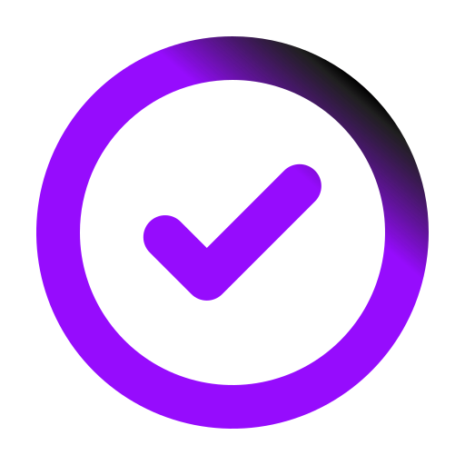
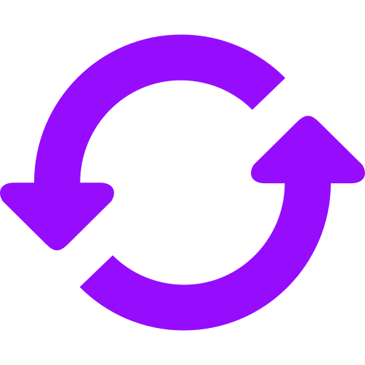
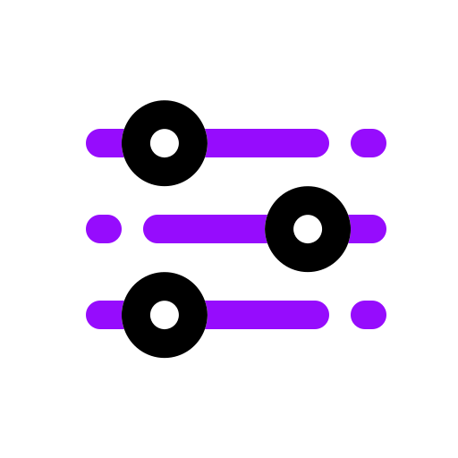

<article class="container">
  <section class="container-content">

    <h1>Bem-vindo ao TechNote: Sua Plataforma de Gestão de Tarefas e Anotações</h1>
    <div class="paragraph">
      <p>No caos do dia-a-dia, manter-se organizado é essencial. Apresentamos o TechNote, sua ferramenta digital versátil e acessível para gerenciar suas tarefas e notas de forma eficaz.</p>
    </div>

    <div class="paragraph">
      <h2>Centralize suas Tarefas e Anotações</h2>
      <p>Com o TechNote, você pode consolidar todas as suas tarefas e anotações em um único lugar. Não mais desperdice tempo procurando por notas perdidas ou listas de tarefas dispersas. Tudo está ao seu alcance, organizado e pronto para ser acessado quando necessário.</p>
    </div>

    <mat-accordion>
      <mat-expansion-panel (opened)="panelOpenState = true" (closed)="panelOpenState = false">
        <mat-expansion-panel-header>
          <mat-panel-title>
            Marque como Concluído
            
          </mat-panel-title>
        </mat-expansion-panel-header>
        <p>Acompanhe seu progresso marcando as tarefas como concluídas. Visualize suas realizações de forma clara e mantenha-se motivado para alcançar seus objetivos.</p>
      </mat-expansion-panel>

      <mat-expansion-panel (opened)="panelOpenState = true" (closed)="panelOpenState = false">
        <mat-expansion-panel-header>
          <mat-panel-title>
            Atualize com Facilidade
            
          </mat-panel-title>
        </mat-expansion-panel-header>
        <p>Seja no trabalho, em casa ou em movimento, atualize suas tarefas e anotações com facilidade. Com acesso instantâneo via web, você pode manter suas informações atualizadas a qualquer momento e de qualquer lugar.</p>
      </mat-expansion-panel>

      <mat-expansion-panel (opened)="panelOpenState = true" (closed)="panelOpenState = false">
        <mat-expansion-panel-header>
          <mat-panel-title>
            Estilize para sua Preferência
            
          </mat-panel-title>
        </mat-expansion-panel-header>
        <p>Personalize suas notas e listas de tarefas com uma variedade de opções de estilo. Escolha entre uma paleta de cores vibrantes para destacar itens importantes ou para organizar por categorias.</p>
      </mat-expansion-panel>
    </mat-accordion>

    <div class="paragraph">
      <p>O TechNote é gratuito e de acesso livre para todos. Acreditamos que a organização não deve ser um luxo, mas sim uma ferramenta acessível para todos que desejam melhorar sua produtividade e eficiência.

        Comece hoje mesmo a simplificar sua vida e alcance novos níveis de produtividade com o TechNote. Junte-se a nós e descubra como a organização pode ser fácil e gratificante.</p>
    </div>

    <div class="button">
      <button mat-stroked-button routerLink="/listNotes">Começar agora</button>
    </div>


  </section>
</article>
